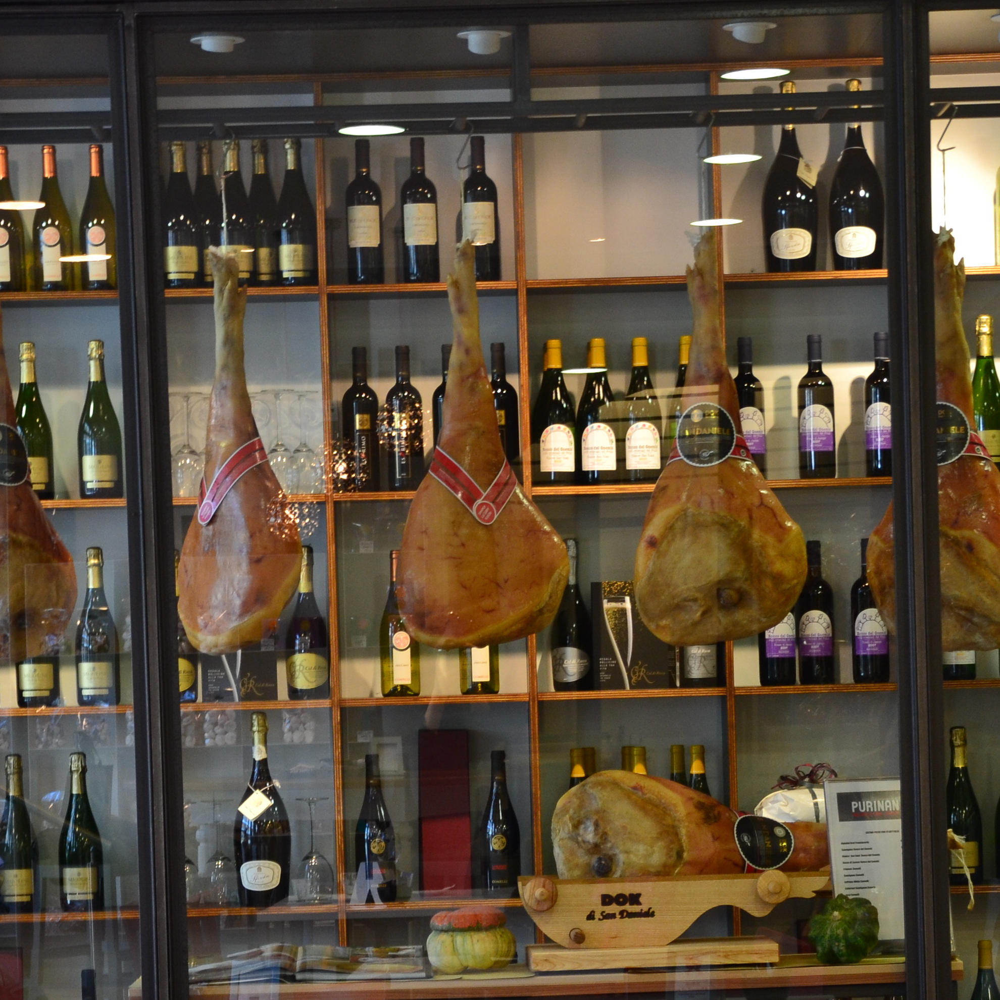

Bar - Pasticceria

E' possibile degustare qualsiasi tipologia di bevanda; caffè, orzo, ginseng, oltre a prodotti per la colazione preparati al momento come spremute. Oltre 60 anni di esperienza nel settore della produzione artigianale, cura nei particolari, studi su nuove tecniche di realizzazione, progettazione e allestimento della tua torta.
Panificio

Da oltre 60 anni il panificio Purinan è il più conosciuto a Udine. Nel panificio Purinan si respira la tradizione, in particolare di quella del fare il pane, quello vero, preparato con lo sforzo e la passione di alzarsi alle 4 del mattino e impastare. Sembra facile, ma unire dei semplici ingredienti come l’acqua e la farina per creare quella fragranza, quel profumo che la mattina si percepisce nell’aria, è una vera e propria arte.
Winery

Non solo pane, non solo pasticceria, il panificio Purinan è anche vineria in città! Potrete trovare una selezione di vini delle più pregiate cantine Friulane del Collio e dei Colli Orientali del Friuli. Inoltre, in collaborazione con il prosciuttificio DOK Dall'AVa, potrete degustare il miglior prosciutto di San Daniele.